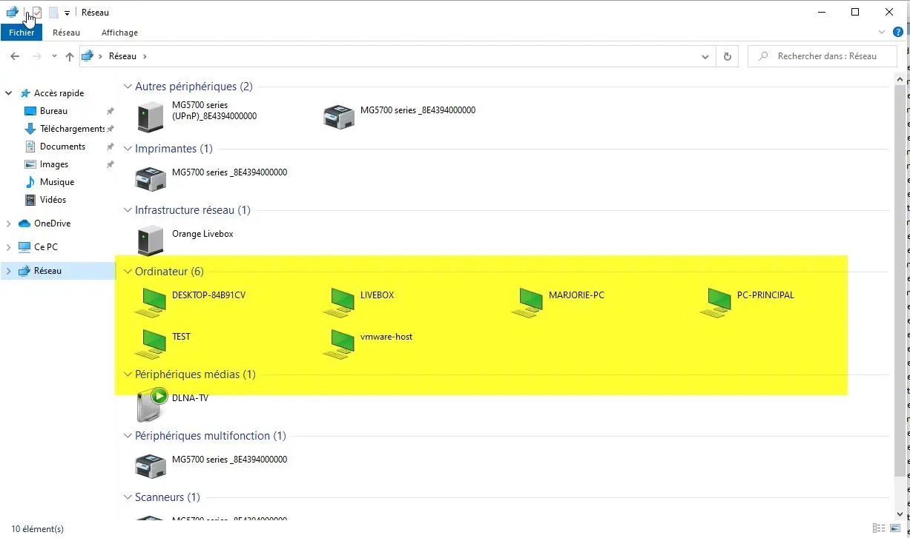
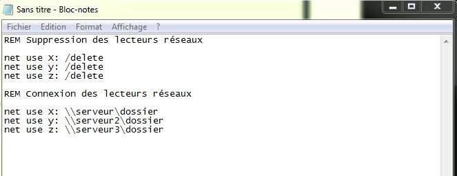

Portfolio - Allan Biville
Compétences Réseaux
Installer des machines virtuelles (VM) avec PROXMOX


Modifier les paramètres réseau (IP,DNS,Passerelle,Masque) d'un PC ou d'une VM
Partage de dossiers/fichiers via groupe de travail (WorpGroup)


Installer un ActiveDirectory (AD/DS) avec Windows Server 2016 et intégrer des PCs au domaine
Créer des scripts de connexion au démarrage de Windows
et mapper des lecteurs réseaux
